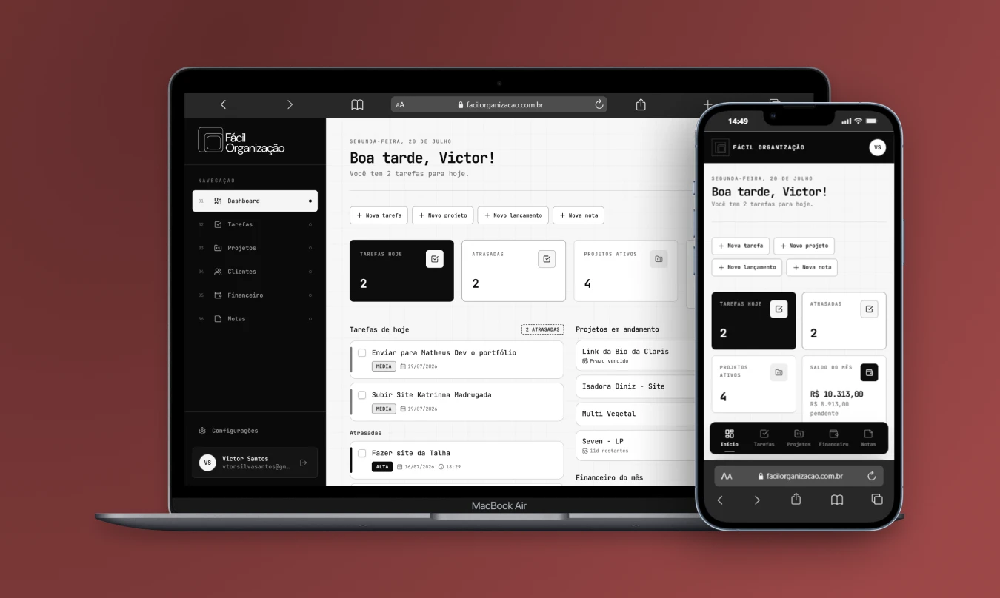

Digital Design
Digital Design · VS ExperienceA good idea deserves an experience to match.
From the first workflow to an evolving product: we connect business goals, experience and interface. Commission the design for your development team or combine design and implementation.
Real projects · explore examples


One foundation for five modules.
A shared language across the product.
Find the right service for this moment.
Explore the specialities. We can address a specific need or connect stages within one project. The scope is agreed before work starts.
UX/UI
Experience and interface aligned with product goals and user tasks.
Discuss this serviceSaaS interface
Workflows and screens for SaaS products, designed around daily use and user roles.
Discuss this serviceMobile apps
Mobile app design. Development and app store publication are scoped separately.
Discuss this serviceDashboards
Panels that organise indicators, information and actions for clearer decisions.
Discuss this servicePrototypes
High-fidelity interactive workflows to explore a solution before development.
Discuss this serviceVisual MVP
A visual version focused on the hypothesis you need to assess. Functional software is scoped separately.
Discuss this serviceProduct design
From understanding the problem to defining the product experience and interface.
Discuss this serviceDesign review
Review of an existing experience, with documented issues and prioritised improvements.
Discuss this serviceRedesign
Reworking workflows and interfaces around what needs to change in the current product.
Discuss this serviceDesign sprint
A focused process to frame a challenge, explore solutions and prototype an approach.
Discuss this serviceSystems & SaaS
Functional systems and digital products, with modules and integrations defined during diagnosis.
View service and pricingAn idea to validate. A product to evolve.
For teams turning an idea into clear workflows or improving an existing experience. We start with the problem and decide what to design, test and build.
Understand
Goals, people, usage context and constraints.
Structure
Workflows, architecture and product priorities.
Prototype
Interfaces and interactions to evaluate the approach.
Evolve
Validation, handover or commissioned development.
Our own product, from workflow to interface.

Context is part of the project.
Fácil Organização brings tasks, projects, clients and finances together. It is our own product in development: a concrete application of product and interface decisions, with its status made clear.
The scope follows the need.
You do not need to commission everything. The initial conversation helps choose deliverables, working format and project dependencies. Timeline and investment are defined in the proposal.
What is your next step? Let’s find the way forward.
Tell me about your context and what you want to achieve. We will define the services that make sense for this moment.